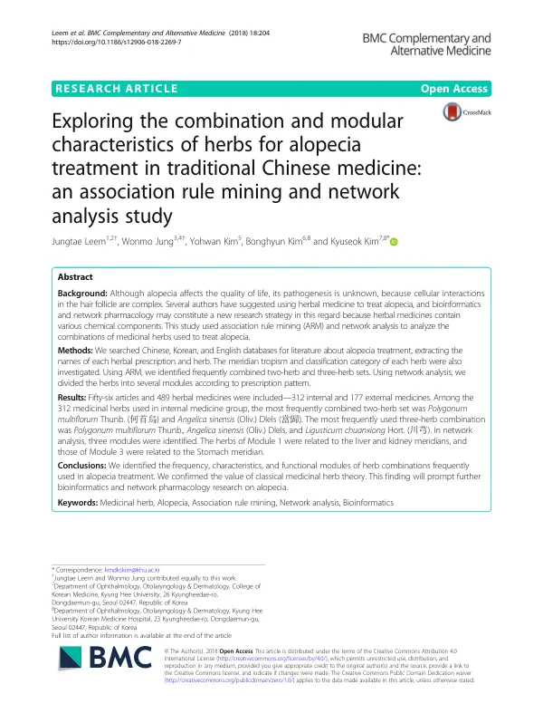

Exploring the combination and modular characteristics of herbs for alopecia treatment in traditional Chinese medicine: an association rule mining and network analysis study
Leem J, Jung W, Kim Y, Kim B, Kim K
BMC Complementary and Alternative Medicine 18(1):204

첫 장 · 오픈액세스First page · open access
논문 소개Summary
탈모를 한약으로 치료할 때 어떤 약재를 어떻게 짝지어 쓰는가는 오랜 임상 경험 속에 쌓여 있지만 명시적으로 정리된 적이 없었습니다. 이 연구는 그 경험의 구조를 연관규칙 마이닝과 네트워크 분석으로 드러내려 한 것입니다.
중국어와 한국어, 영어 데이터베이스에서 탈모 치료 문헌을 찾아 처방명과 약재명을 뽑고, 각 약재의 귀경과 분류를 함께 조사했습니다. 논문 56편에서 약재 489건이 나왔고 내복약이 312건, 외용약이 177건이었습니다. 연관규칙 마이닝으로 자주 함께 쓰이는 두 약재 조합과 세 약재 조합을 찾았고, 네트워크 분석으로 처방 양상에 따라 약재를 여러 모듈로 나누었습니다.
내복약 312건에서 가장 자주 함께 쓰인 두 약재는 하수오와 당귀였습니다. 세 약재 조합에서는 하수오와 당귀에 천궁이 더해진 것이 가장 잦았습니다. 네트워크 분석에서는 세 개의 모듈이 확인되었는데, 첫 번째 모듈의 약재들은 간경과 신경에, 세 번째 모듈의 약재들은 위경에 관련되어 있었습니다.
이 결과의 성격을 분명히 해야 합니다. 자주 함께 쓰였다는 것은 효과가 있다는 뜻이 아닙니다. 문헌에 실린 처방의 빈도를 센 것이므로, 그 처방들이 효과가 있었는지는 이 연구가 묻지 않았습니다. 여기서 나온 것은 임상 경험의 지도이지 근거가 아닙니다.
그럼에도 이 지도에는 쓸모가 있습니다. 모듈이 귀경이라는 고전 이론과 맞아떨어졌다는 것은, 오래된 분류 체계가 실제 처방 행위 속에 살아 있음을 보여 줍니다. 저자들은 이 결과가 탈모에 대한 생물정보학과 네트워크 약리학 연구를 촉발하기를 기대한다고 적었습니다. 실제로 같은 연구진은 뒤에 여기서 추린 약재들의 표적과 경로를 파고드는 네트워크 약리 연구로 나아갔습니다.
Which herbs are paired with which, in treating alopecia with herbal medicine, is knowledge accumulated in long clinical experience but never set down explicitly. This study set out to reveal the structure of that experience through association rule mining and network analysis.
Chinese, Korean and English databases were searched for literature on alopecia treatment, and the names of each prescription and herb were extracted, along with the meridian tropism and classification category of each herb. Fifty-six articles yielded 489 herbal medicines — 312 for internal use and 177 for external. Association rule mining identified frequently combined two-herb and three-herb sets, and network analysis divided the herbs into modules according to prescription pattern.
Among the 312 herbs used internally, the most frequently combined pair was Polygonum multiflorum and Angelica sinensis. The most frequent three-herb combination added Ligusticum chuanxiong to that pair. Network analysis identified three modules; the herbs of the first related to the liver and kidney meridians, those of the third to the stomach meridian.
The character of these findings should be stated clearly. That herbs were frequently used together does not mean they work. The study counted the frequency of prescriptions recorded in the literature; whether those prescriptions were effective is not a question it asked. What emerges is a map of clinical experience, not evidence.
The map is nonetheless useful. That the modules aligned with meridian tropism — a classical theory — shows an old classificatory system still alive inside actual prescribing behaviour. The authors express the hope that these findings will prompt bioinformatics and network pharmacology research on alopecia. The same group did in fact go on to a network pharmacology study tracing the targets and pathways of the herbs identified here.
인용Cite
Leem J, Jung W, Kim Y, Kim B, Kim K. Exploring the combination and modular characteristics of herbs for alopecia treatment in traditional Chinese medicine: an association rule mining and network analysis study. BMC Complementary and Alternative Medicine. 2018;18(1):204. doi:10.1186/s12906-018-2269-7